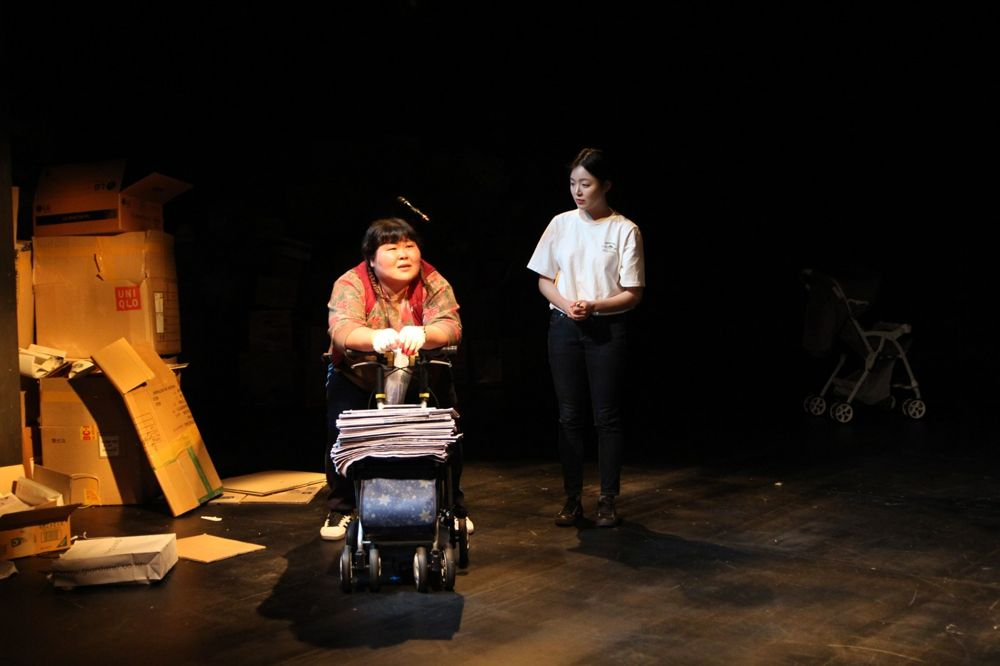

Green Pig > Archive > A History of Wastepaper (I'M F_)

A generation that grew up through the IMF financial crisis of the 1990s talks about the past twenty-odd years of Korean society. Many words show where young people stand now, like "N-po generation" and "working poor." Wastepaper, which can be a means of livelihood for the poor, itself symbolizes poverty in Korean society today. The director and performers went out to collect wastepaper and interviewed young people in their twenties and thirties, and on that basis the work looks back on the experience of the financial crisis and examines the discrimination and competition pervading Korean society. Selected for Doosan Art LAB 2019.
2018.7.31–8.5 / Understand Avenue - Green Pig Young Directors' Series
2018.8.15–18 / Seoul World Cup Stadium - Seoul Fringe Festival
2019.1.17–19 A History of Wastepaper / Doosan Art Center Space111 - Doosan Art LAB
Director: Park Hyunji
Cast: Kim Dasom, Park Haneul, Lee Hwanhui, Choi Jihyeon, Hwang Miyeong
Lighting: Lee Jiyeong
Music: Park Goeun
Design: Kim Yeongseon
Previous: The Whistleblowers | Next: Dream Culture
Back to the archive | Any work
Published 2026.11.13